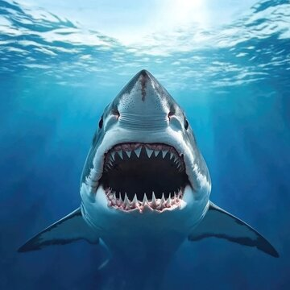
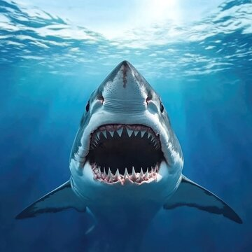

Sharks are a group of fish that have lived in Earth's oceans for more than 400 million years, long before dinosaurs appeared. They are found in nearly every ocean habitat, from shallow coastal waters to the deep sea. Unlike bony fish, sharks have skeletons made of cartilage, which is lighter and more flexible than bone. Most sharks are carnivores and play an important role in maintaining healthy marine ecosystems by keeping prey populations in balance. There are over 500 known species of sharks, ranging in size from the small dwarf lanternshark to the massive whale shark.
 

Some sharks have truly fascinating abilities that make them stand out among ocean animals. For example, sharks can detect tiny electrical signals produced by other animals, helping them locate prey even when visibility is poor. Certain species must keep swimming to breathe, while others can rest on the ocean floor and still get enough oxygen. Sharks also constantly lose and replace their teeth, with some species going through thousands of teeth in a lifetime. Despite their fearsome reputation, most sharks are harmless to humans, and encounters are extremely rare.
| Shark Species | Average Length | Typical Habitat | Diet |
|---|---|---|---|
| Great White Shark | 15-20 feet | Coastal oceans | Seals, fish |
| Hammerhead Shark | 13-18 feet | Warm coastal waters | Fish, squid |
| Tiger Shark | 10-14 feet | Tropical oceans | Fish, turtles |
| Whale Shark | Up to 40 feet | Open oceans | Plankton |